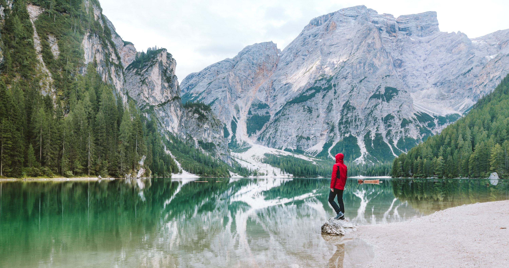

Frequently Asked Questions (FAQ)
What should I include in my backpack?
We suggest bringing a water bottle, some snacks for when you get hungry along the way, a map, a compass, some first aid kit in case anyone gets hurt, a bug repellant spray (this is optional if you don’t like getting mosquitos bites), sunscreen, hiking gear (if you have any and are planning to travel on more advanced hikes) and a smile! We also recommend making sure you dress light and comfortable since you’ll be outside. Make sure you stay covered and but not too much layer or you’ll be sweating buckets. Try to stick to non-cotton clothing such as wool or polyester. We also suggest bringing a light rain jacket in case the weather changes during the hike. We don’t want anyone getting drenched on their first-time hiking either!
What should we include with our first aid kit?
These are a few items we recommend to have: an assortment of bandages, antiseptic wipes, antibacterial ointment, Neurosporene, medical tape, gauze pads, Ibuprofen, Tylenol Pain Relief, Benadryl, moleskin, Vaseline, non-stick pads, tweezers, safety pins and multitool.
Is it necessary to wear special hiking socks?
The short answer is yes! Having a good pair of socks on will not only make your feet feel great throughout the whole hiking experience, but it will also prevent blisters and soreness on your ankles. Since you will be hiking even if it’s only for half an hour, it’s better to do it with comfort and protection. We recommend a combination of wool and synthetic fibers like polyester.
Can I bring pets?
Yes! You can definitely bring your furry friends! Just be sure that they get along with other hikers and if they ever need to use the bathroom, to pick after them. We suggest bringing small garbage bags in your backpack for that. Hiking is for everyone to enjoy the outdoors and it would be even greater if everyone including our furry friends were also watched and cleaned after. Make sure to look up the signs for a nearby trashcan to throw it away!
What snack would you recommend bringing?
We recommend all kind of snacks as long as it doesn’t add too much weight on your backpack for you to carry during the hike or melts. We especially enjoy trail mix, granola bars, Chex mix, small bags of chips and dried up fruit but anything works as long as it lasts long.